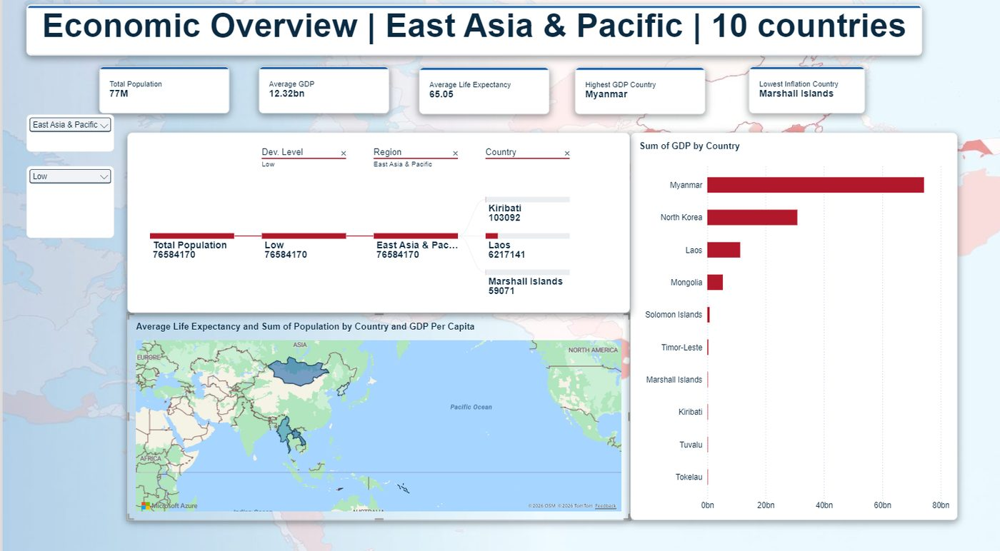
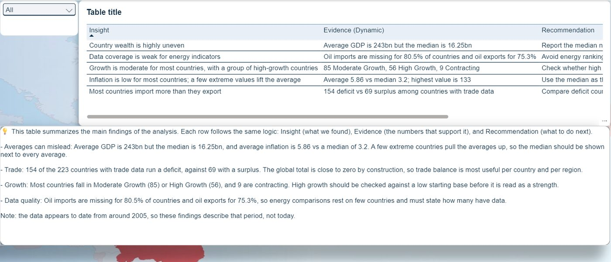
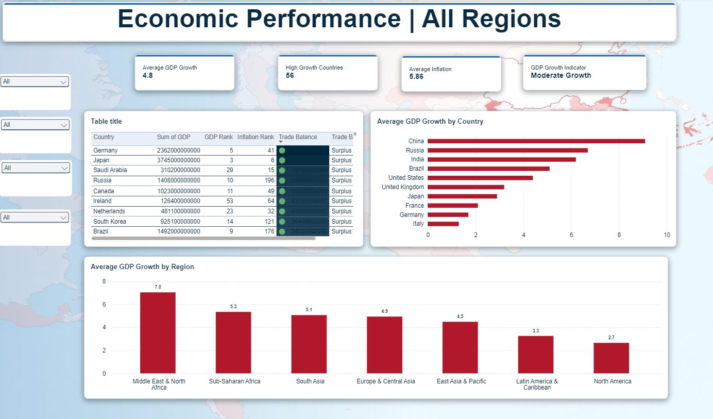

Global Development World Metrics Dashboard
Business case (DEPI): an international economic research organization needs to compare countries' development levels to support policy and investment decisions.
I received 263 rows × 45 columns stored entirely as text, including a European Union aggregate that double-counts its members and 31 uninhabited territories with almost no indicators. I wrote all the cleaning in Power Query M, built an 8-table model and a 9-page report that explains its own findings.
263 → 231rows to clean countries
8subject tables in the model
35DAX measures
9report pages
What I did
- Typed every column by scanning all its values, and kept missing values as null instead of zero, because zero means "measured as zero" and null means "unknown".
- Standardized 15 outdated country names and added a Region column for slicing and drill-down.
- Built insight and recommendation tables inside Power BI: each insight shows evidence that updates with the active filters, and recommendations are ranked by priority.
Key findings
Averages misleadAverage GDP 243bn vs median 16.25bn
Most countries run a trade deficit154 deficit vs 69 surplus (223 with data)
Energy data is thinOil imports missing for 80.5% of countries





